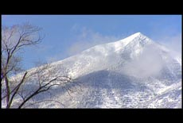
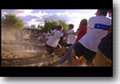
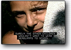
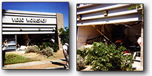

|
News
|
VIDEOWORKSHOP Wins Prestigeous
NPS Contract

The National Park Service has awarded VIDEOWORKSHOP
a 5-year contract to produce programming for the Dept.
of the Interior. VW is one of only
12 firms nationally to receive the award. The programs
produced will be designed to educate and inspire visitors
to some of the 385 national park sites throughout the
US.
In awarding the contract, representatives of the Park
Service said they were impressed with the experience
of the VW team, and our strengths with
interpretive storytelling. Requirements will include
materials originated on High-Definition, Film, and Standard
Definition videotape, as well as conversions to DVD
and Websites.
|
Crystal Award of Excellence

Northern Arizona University's Office of Enrollment Marketing
Services was presented with The Crystal Award of Excellence
for its 2002 promo titled 'A Day in the Life' featuring
NAU student Gina Diaz. Keith Page was Director of Photography,
with Craig Spencer providing location sound. Offline
Non-Linear editing performed by Korey Powell, with Online
Editing finalized by Lyle Schnebley.
Click Here to link to the
official NAU press release.
|
Kodak Gemini Nomination
Director of Photography Keith Page has been nominated for the coveted
Kodak Gemini award for 'Best Photography in an Information Program or
Series' for 'Hopi Art', produced for Discovery Channel Canada.
|
Freddie Award
The Medfilms' program 'Bioterrorism for Healthcare' is
the recipient of the prestigious 2002 FREDDIE award in
the category of 'Infectious Diseases', beating out stiff
competition from the likes of TLC, Dateline NBC, and ABC
News. The program deals with health care proceedures in
the event of a bioterrorist attack.
'Bioterrorism for Healthcare' was shot by Keith Page and edited by
Lyle Schnebly. Graphics and animation were provided by Robert Francis
and Korey Powell.
|
New Grippage
We've recently added a lot of new equipment to our grip
package and purchased a new Ford E-250 van.
Contact Keith Page for more info...
|
Captioning/Translation

We now offer Closed Captioning, Language Translation, and Sub-Titling
services in-house. Let us show you how to reach a wider audience through
the miracles of Closed Captioning.
|
Is it just me, or is it drafty in here?

After leaving a local watering hole, a drunk mistakenly
utilized the VIDEOWORKSHOP facility as
his personal garage, completely demolishing two east-facing
rooms. Startled by the cacophony of 12 feet of plate glass
collapsing around him, the errant boozer realized his
mistake and made his way back home; leaving a mile-long
trail of glass, gypsum, and battered video equipment in
his wake. At press time, this genious was still at large.
|
| "Holy $#!&" exclaims incredulous bystander |
Copyright © 2003VIDEOWORKSHOP.
All Rights Reserved
|